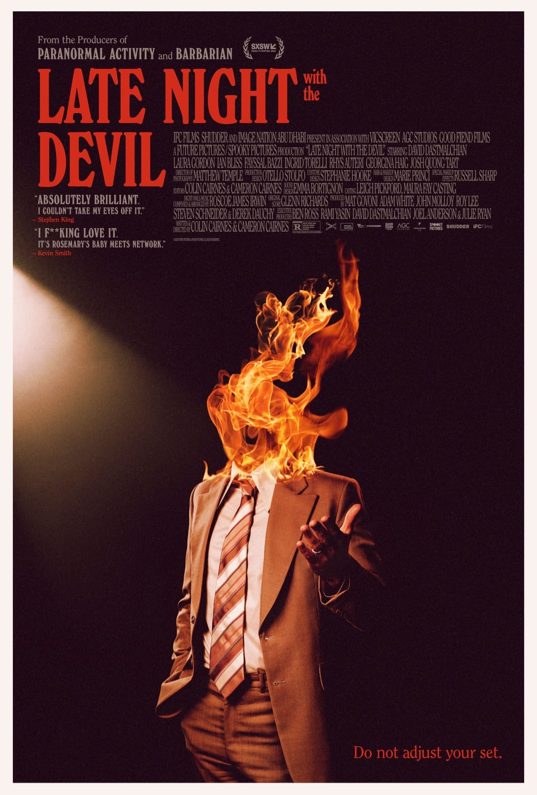
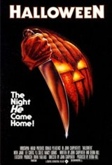

Fright Night Movie Showcase

View
 View
View
 View
View
Late Night With The Devil
A live television broadcast in 1977 goes horribly wrong,
unleashing
evil into the nation’s living rooms.
Synopsis
Johnny Carson rival Jack Delroy hosts a syndicated talk show
‘Night Owls’ that has long been a trusted companion to insomniacs
around the country. However, ratings for the show have plummeted
since the tragic death of Jack's beloved wife. Desperate to turn
his fortunes around, on October 31st, 1977, Jack plans a Halloween
special like no other- unaware he is about to unleash evil into the
living rooms of America.
Directed By
-
Colin Cairnes
-
Cameron Cairnes
Starring
-
David Dastmalchian
-
Laura Gordon
-
Ian Bliss
-
Fayssal Bazzi
-
Ingrid Torelli
-
Rhys Auteri
-
Georgina Haig
-
Josh Quong Tart
Written By
- Colin Cairnes
- Cameron Cairnes
Produced By
- Mat Govoni
- Adam White
- John Molloy
- Roy Lee
- Steven Schneider
- Derek Dauchy
Return To Main Titles
Halloween
On a cold Halloween night in 1963, six year old Michael Myers
brutally murdered his 17-year-old sister, Judith. He was
sentenced and locked away for 15 years. But on October 30,
1978, while being transferred for a court date, a 21-year-old
Michael Myers steals a car and escapes Smith's Grove.
He returns to his quiet hometown of Haddonfield, Illinois,
where he looks for his next victims.
Synopsis
It was a cold Halloween night in 1963 when six-year-old Michael
Audrey Myers brutally murdered his 17-year-old sister, Judith
Margaret Myers. He was sentenced to the Smith's Grove-Warren
County Sanitarium for his brutal crime. There, he remained
locked away and dormant for 15 years. But on October 30, 1978,
things are about to change. While being transferred for a court
date, 21-year-old Michael Myers escapes. He returns to his quiet
hometown of Haddonfield, Illinois, where he follows three young
women.
Seventeen-year-old Laurie Strode (Jamie Lee Curtis) is a quiet
bookworm, preferring babysitting over parties. As she goes about
her school day, she finds her mind playing tricks on her.
Her friends, Annie and Lynda, are busy thinking about the
fun of Halloween night. That evening, Laurie and Annie are
babysitting across the street from each other. Laurie has to
keep an eye on comic-loving Tommy Doyle, while Annie watches
"little Lindsey Wallace," obsessed with the television. Little
do they know, Michael Myers has come home to kill.
Their only hope is Dr. Loomis (Donald Pleasence),
Michael's childhood psychiatrist who has followed Michael's
trail back to Haddonfield. Loomis enlists the help of town sheriff
Leigh Brackett, who happens to be Annie's father. The duo search
the streets, but the bogeyman is close to his prize for the night.
Directed By
Starring
-
Jamie Lee Curtis
-
Donald Pleasance
-
Jamie Lee Curtis
-
Nancy Loomis
-
P.J. Soles
-
Charles Cyphers
-
Kyle Richards
-
Brian Andrews
-
John Michael Graham
-
Nancy Stephens
Written By
-
John Carpenter
-
Debra Hill
Produced By
Return To Main Titles